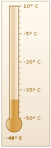

Thermometer Gauge > Creating a simple gauge |
As an example for thermometer gauge, we will plot the temperature of Antarctica. The final result would look something as under: |
|  |
The various steps involved in creating this thermometer chart are:
|
| XML for the chart |
| The XML for the chart can be listed as under: |
| <chart palette='4' lowerLimit='-50' upperLimit='10' numberSuffix='° C'> <value>-40</value> </chart> |
| Explanation |
First of all comes the <chart> element which is the starting element for any chart that you create using FusionWidgets. Now we define the lower and upper limits of the gauge scale. To define the limits, we use the lowerLimit and upperLimit attributes of the <chart> element. We also set the palette number and degree character as number suffix. |
| <chart palette='4' lowerLimit='-50' upperLimit='10' numberSuffix='° C'> |
| After that, we set the value of the chart using: |
| <value>-40</value> |
| And this finishes our first thermometer chart. |